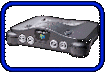
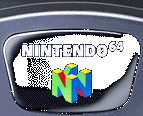

|  |
|  |
NINTENDO64のボディは、「いままでにないデザインのゲーム機を作ろう」というチャレンジ精神と、「アメリカでウケるカッコいいデザインにしよう」とのキーワードのもとに製作されました。
いままでにないものを作るために、任天堂スタッフがとった方法は、なんと設計の手法から一新してしまうことでした。そんなワケで、NINTENDO64のボディは、100％コンピュータ上で設計されることになったのです。これは、任天堂のゲーム機でははじめてのことでした。 具体的には３次元CADを用いて、機構部品や電子部品のレイアウトをモニター上でシミュレートしながら、ボディ内部や外観の設計が進められていきました。 いままでにないイメージを打ち出すため、そしてアメリカでウケるようにと、スタッフが意識したのは曲面、曲線です。そのためNINTENDO64のボディは、 ファミコンでおなじみのスクエアなルックスではなく、カーブのラインを強調する外観に仕上がっていきました。３次元CADは、こうした有機的で流れるような曲面をつくるのに適していました。 こうして、モニター上で何度もデザインの修正が行なわれました。最終的に完成したボディのCADデータは、そのまま金型製作のデータとして利用されました。 |
| カラーリングへのこだわりのページへ |
 |